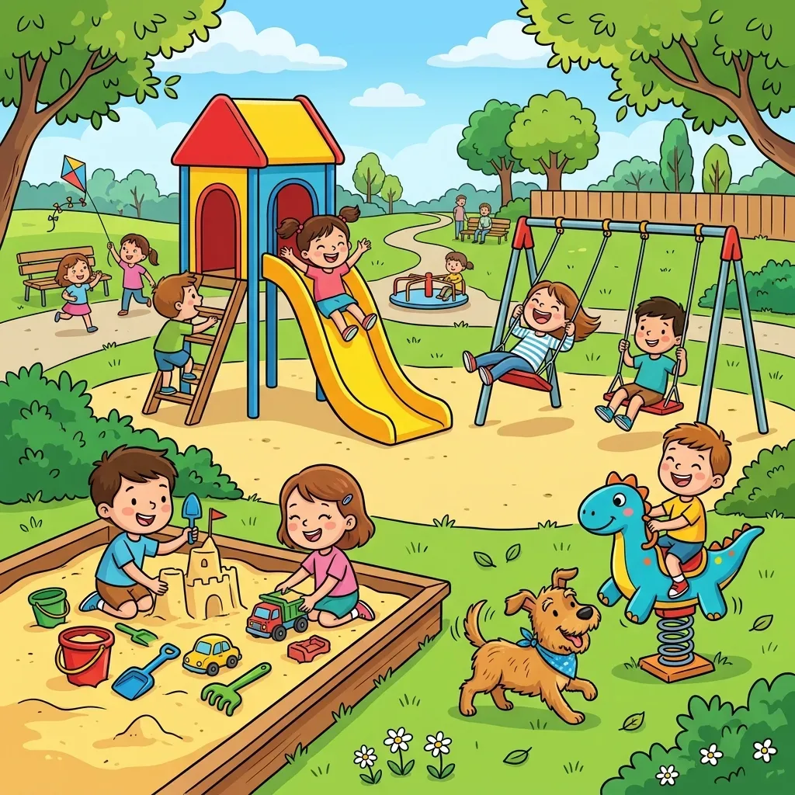
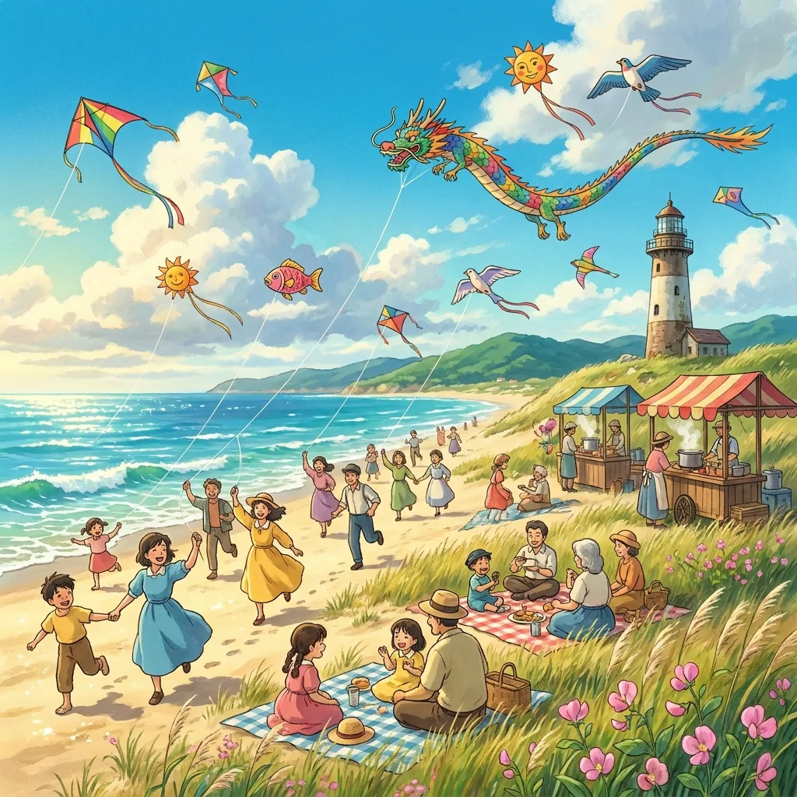

What Spot-the-Difference Puzzles Actually Teach Kids
Spot-the-difference puzzles look like simple entertainment, and they are — but underneath, they exercise a surprisingly specific set of developmental skills. Teachers and occupational therapists use them deliberately. Here's what's being trained, and how to match puzzles to your child's age so they stay in the fun zone.

The skills under the hood
- Visual discrimination — noticing that two similar things are not identical. This is a direct precursor to reading: telling b from d, or was from saw, is visual discrimination applied to letters.
- Sustained and selective attention — systematically scanning a busy scene while ignoring distractions is exactly the attention skill classrooms demand.
- Working memory — the child holds a detail from picture A in mind while checking picture B against it. That "compare against what you just saw" loop is a genuine working-memory workout.
- Systematic search strategies — younger children scan randomly; with practice they invent strategies (left to right, object by object). Watching a child develop a strategy is watching executive function grow.
- Vocabulary and conversation — done together, every difference becomes a sentence: "The butterfly turned purple!" For toddlers and language learners this is effortless naming practice.
- Frustration tolerance and persistence — a bounded challenge ("just 2 left!") teaches sticking with a task, with a guaranteed payoff at the end.
Age-by-age difficulty guide
Ages 3–4
Work side by side, and treat it as a naming-and-pointing game. Use the easiest setting — a handful of large objects and about 5 bold differences (an object missing, a big color change). Expect to find the differences together; the win is the conversation.
Ages 5–6
Children can now hunt independently on easy puzzles and enjoy circling their finds with a marker. Tell them how many differences there are and let them keep count — early number practice hidden in a game.
Ages 7–9
Move to medium: more objects, 8 or so differences, including sneakier ones like a flipped or resized object. This is the golden age for the format; a fresh puzzle at a restaurant table beats a phone more often than you'd expect.
Ages 10+
Hard mode — busy scenes, 10–15 differences, subtle changes — works as a genuine challenge, a sibling competition ("same puzzle, two copies, race"), or a rainy-day time trial. Adults are not immune either.
Making it screen-free (the printable advantage)
Plenty of spot-the-difference apps exist, but the printed version has quiet advantages: no ads or notifications, a pencil in the hand (fine-motor practice), easy to do in the car or a waiting room, and a natural end point. Print three before a road trip and you have half an hour of calm, per child, for the cost of three sheets of paper.

Four themes kids love — garden, ocean, space, farm — with the answer key on its own page.
Open the free generator
Three ways to level it up
- Describe, don't point: the child must say the difference in a full sentence before circling it — instant language practice.
- Timer tension: for competitive kids, "all 8 in five minutes" transforms the puzzle into a mission.
- Make it a routine: a "puzzle of the day" after homework works like a palate cleanser — every puzzle from a generator is new, so the routine never goes stale.